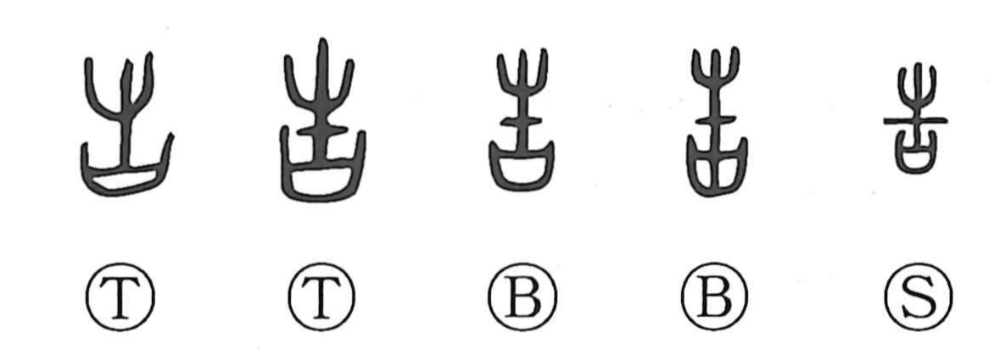

告

Kun: tsugeru, inoru | On: koku
to tell ・ to inform ・ to announce ・ to pray
Explanation
Originally a pictograph, 告 depicts a small branch set upon a ritual container known as a sai, a covenant vessel that held written petitions to the gods. The scene is that of presenting this adorned vessel before the deities to pray and make a formal announcement. From this sacred act of petitioning, the sense naturally broadened to reporting or informing those of higher rank. The related character 誥 marks a king’s command conveyed through this same ritual medium, while 史 shows the sacred object fixed to a wooden post for prayer and worship, anchoring 告 in the sphere of ritual proclamation and written supplication.